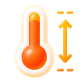

前端接入验收 · v1.0.0
让效果完整保留
本页只加载 UI 样式、资源与交互层，没有演示车辆数据和图表代码。可将同样的检查带入实际 App WebView。
宿主区域
这里在报告样式范围以外，用来检查全局字体和按钮是否被覆盖。
尚未运行
字体与资源
92.8%
数字使用 D-DIN PRO SemiBold 600，中文使用系统字体。

折叠与展开
电流曲线：由前端挂载图表。
真机还要检查
先滑到本页中部再打开抽屉，滑动遮罩、抽屉内容以及内容底部。底层页面应不动；关闭后应回到原位置。分别检查关闭按钮、遮罩、“我知道了”三种关闭方式。
在 iOS 与 Android 的实际 App WebView 中各检查一次。系统开启“减少动态效果”时，抽屉会直接关闭，这是预期行为。